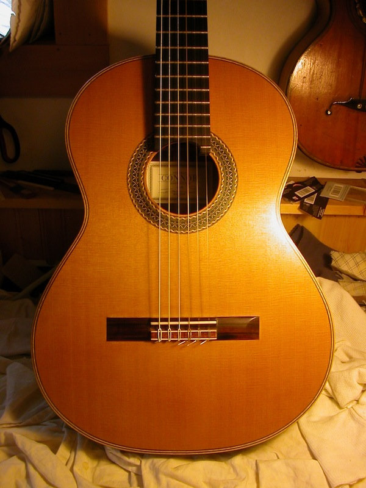

2010 Cedar/Braz. Rosewood $9500, includes custom fit Hoffee Case

Scale length (mm): 650
Nut width (mm): 52
Top: Cedar
Back / Sides: Brazilian Rosewood
Fingerboard: Ebony, raised
Tieblock: 12 hole
Bridge: Brazilian Rosewood
Finish: French Polish
Tuners: Gotoh Premium
Condition: Structurally Excellent, top has fingernail scratches from
playing.
Viewing / trial possible: Local only
Location (nearest city): Washington DC area
The only reason I am parting with this guitar is because I got another
Connor, the new one spruce. Its a big sea change for me being a cedar
player for so long. This instrument for sale is absolutely outstanding,
its the finest cedar Connor I've ever played, warm, robust, powerful
and clear. You can hear this in the video clip. I consider this guitar
to be flawless, plays like a dream and has met all my expectations in a
concert guitar over the last few years I've owned it. Please feel free
to ask me any questions about this instrument via email: mokotoff@gmail.com